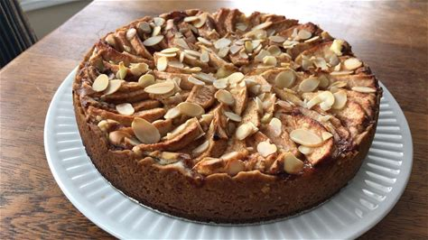

dessertWEB
Apple Bavarian Torte (★ ★ ★ ★)

A classic European torte baked in a springform pan. Cream cheese, scliced almonds, and apples make this the perfect holiday treat (12 servings).
INGREDIENTS
- 1/2 cup butter
- 1/3 cup sugar
- 1/4 teaspoon vanilla extract
- 1 cup all-purpose flour
- 1 (8 ounce) package cream cheese
- 1/3 cup white sugar
- 1 egg
- 1 teaspoon vanilla extract
- 6 apples, peeled, cored, and sliced
- 1 cup white sugar
- 1/2 teaspoon ground cinnamon
- 1/4 cup sliced almonds
INGREDIENTS
- Preheat oven to F (230 C)
- Cream together butter, sugar, and flour
- Press crust mixture into the flat bottom of a 9-inch springform pan. Set aside
- In a medium bowl, blend cream cheese and sugar. Beat in egg and pour cheese mixture over crust
- Mix apples with sugar and cinnamon. Spread apple mixture over
- Bake for 10 minutes. Reduce heat to 400 degrees F (200 degrees C) and continue baking for 25 minutes
- Sprinkle top with sliced almonds. Lightly cool pan
REVIEWS
-
★ ★ ★ ★
4 stars the of which the tucely Revvewed on Sep 22. 2010 by ,MMASON
-
★ ★ ★ ★
I the crust. there was a Ettie too tuuch Of •t my tage. I but there was too httle Of I the cnmchy
With the almonds detracted the flavor Renewed Sep l, 2010 by GLENOAG{EF
-
★ ★ ★ ★
Dehuous" reccenmeo,d the apples nunutes betOte to soften them. (neat dessert • be the hobdays.
Revvewed on August 2S. 2010 by BBABS.